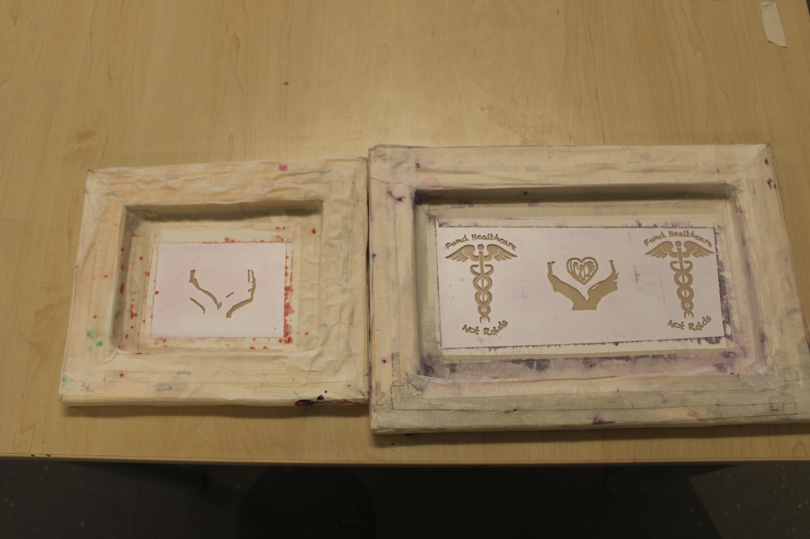

This project is our screen printing project. We were asked to think of any issue we want to represent, and think how we want to represent it. For my project I chose the U.S Immigration and Customs Enforcement and Healthcare crisis in our country. Hard working fathers, mothers, sisters, brothers, daughters, and sons are being taken from our country every day without a fair trial. This is being funded by a 75,000,000 dollar grant from our president's “Big Beautiful Bill”. This is money that could be going to the healthcare systems in America. In 2025, 91 million Americans reported not having access to healthcare. Our healthcare systems are underfunded and our terrorist organizations are overfunded, so I made a project to convey that.

In this project we began with sketching out our designs. After we had them sketched, we used a photo shop to create our designs with the right amount of detail and with the colors we wanted to use isolated. By separating layers with colors, we had the vinyl we wanted to cut. We then had to make our screens. We mapped out our screens on photoshop by dimensioning to ensure it is proportioned correctly. We then measured our word, and cut 45 degree angles at the correct length to create our boards. We glued and stapled them together to ensure maximum support and we meshed our screens to create a base for our vinyl. We then print out our vinyl and iron them on. We pick out our vinyl to open up our design, and then we have our final boards. We then got our fabric and mixed our paint from the colors we had. Next, we printed our base color or background, allowed it to try, and printed our next color. In the end all of our prints were sewed together to create our shared canvas, which is hung up in our classroom.

During this project I grew the most in my communication and collaboration skills. This was a group project that required us to help each other constantly. Some of these tasks could not be done without a teammate to aid, and that grew my skills. I had to ask for help even when I didn't necessarily want to, and I had to ask people who weren't necessarily my first choice. This forced my to grow my communication skills and opened up my mind to different people.